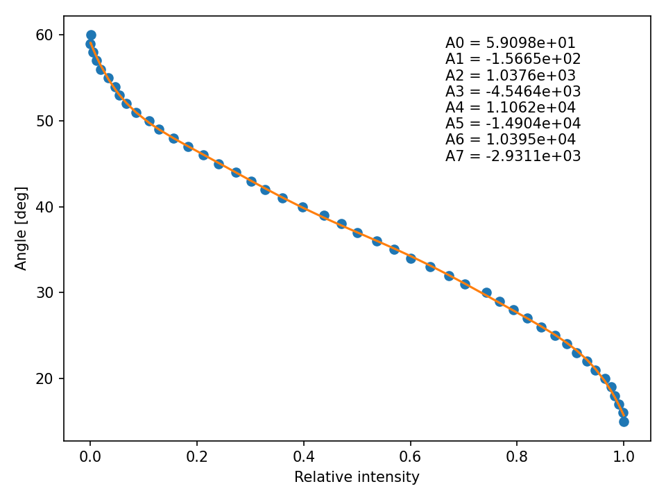

EL14 is managed with commands sent with http protocole over intranet. On boot nodeMCU will try to connect to lab WiFi and set up a server. Server (at most cases) takes ip 172.17.32.174. If the ip is different, the last part will be near number (173, 175). It can be checked also on router website in connections map section. This ip address should be given to handler.
Important. On power-up, nodeMCU boots and state of some of the pins changes. EL14 sees it as an attempt of serial communication and responds with errors. This changes the state of nodeMCU and it doesn’t boot properly. During boot, the devices should be disconnected!. Half a second is enough, then nodeMCU goes into initialisation procedures and can be connected back. Also, on power-up, EL14 calibrates resonant frequencies and it can take some time. NodeMCU waits for 5 s, but if it is not enough just don’t connect the device back before the EL14 stops.
Available commands are listed in section below. Command syntax follows url syntax from http protocole and looks like this: http://device_ip/command?key1=value1&key2=value2. For example if device is hosting a server under ip address 172.17.32.174 and one wants to rotate it to absolute position of 72.3 deg, the url will look like this: http://172.17.32.174/move_absolute?deg=72.3. If one wants to set new _angle_min and _angle_max values, the url will look like this: http://172.17.32.174/set_min_max?min=0&max=100.
Important. Parameters of commands which need them are obligatory for stable work of the device.
If one wants to use python for control an exemplary script for setting speed with angle-time command, homing the device and rotating by arbitrary angle is shown below.
import requests
url = 'http://172.17.32.174/'
speed_angle = 100 # deg
speed_time = 0.1 # s
angle = 100 # deg
requests.get(
url + 'set_angle_time',
params={
'angle' : speed_angle,
'time' : speed_time
}
)
requests.get(
url + 'home',
params={
'dir' : 1
}
)
requests.get(
url + 'move_relative',
params={
'deg' : angle
}
)When working with Cicero, the commands names are the same, however architecture of handler doesn’t allow for key-value syntax. All commands are sent with key params in order set in Cicero RS232 group. Software version compatible with Cicero reads those parameters in set order. If one wants to use software version with key-value syntax, handling functions in server part need to be changed (different parts of code already written should be used). Example is shown below.
Key-value code:
void handle_set_min_max() {
/*
set_min(server.arg(0).toFloat());
set_max(server.arg(1).toFloat());
*/
for (uint8_t i = 0; i < server.args(); i++) {
if(server.argName(i) == (const String)"min") {
set_min(server.arg(i).toFloat());
}
else if(server.argName(i) == (const String)"max") {
set_max(server.arg(i).toFloat());
}
}
server.send(200, "text/html", "Min and max set");
}Cicero compatible code:
void handle_set_min_max() {
set_min(server.arg(0).toFloat());
set_max(server.arg(1).toFloat());
/*
for (uint8_t i = 0; i < server.args(); i++) {
if(server.argName(i) == (const String)"min") {
set_min(server.arg(i).toFloat());
}
else if(server.argName(i) == (const String)"max") {
set_max(server.arg(i).toFloat());
}
}
*/
server.send(200, "text/html", "Min and max set");
}The device can be rotated in jog mode, where the movement is not caused by a command set, but by changing jog pins states. This mode doesn’t need the communication and thus doesn’t have time delay between the procedure start and movement. After jog step is done, the device sends a response through serial about its current position - here some delay may be built up.
In jog mode the device can be rotated forward or backward by a predefined step. Jog step can be set with request set_jog_step.
Device can be triggered on pin D6 which calls external interrupt handling routine. This function stops current job of the nodeMCU and moves the stage to previously set position. This mode should be used when all other requests are done and device is ready as it may interfere with the request handling. It is useful when one wants to have precise timing of the rotation.
By default, the device rotates to _angle_trig_start position when request start is called. Then, on trigger moves to position _angle_trig_stop. Both _angle_trig_start and _angle_trig_stop parameters can be set using either set_trigger_angles or set_trigger_power requests. In first case one inputs arbitrary angles, in second one inputs relative power which device converts to angles using calibration curve fit.
To change the behaviour on trigger, function rot_stage::handle_trig_interrupt needs to be modified.
Important! If trigger handling function uses commands to rotate the stage there is a constant delay of 20 ms between the trigger rise and the rotation. If jog functions are used, the rotation is instantenous upon trigger. By default the trigger interrupt handling routine uses jog functions. This can be changed in rot_stage::handle_trig_interrupt.
Flashing new software faces the same problems as power up part - serial communication cross. For the upload of new software the devices should be disconnected. Current software in PlatfromIO project can be downloaded from gDrive here or from github here.
PlatformIO is a extension for VisualCodeStudio which is really helpful with microcontroller programming. To use it, add it to your VisualCode extensions and a new tab should appear with alien-ant-alike logo. Then download the project directory and open it using PlatformIO (not by Visual File > Open). Then one can modify the project or build it (it means compile everything in dependency tree) and upload. Sometimes small changes need to be done in platformio.ini file, such as COM port the device is connected to.
After installing the stage in the setup we performed a calibration and got angle vs relative power dependence, to which a 7th order polynomial was fitted. Curve plot and fitted coefficients values are shown below.

The device has receive_data parameter equal to false which means it doesn’t get start and end requests from handler. However, they are included in server paths for future development or specific needs. Main idea is that if user wants to rotate the device it should be called explicitly, so one can trace all delays in the system.
To properly use the trigger mode a schema should be used:
set_trigger_[angles/power] - device sets trigger parameters and rotates to _angle_trig_start position_angle_trig_stop positionhomeRotates the stage to home position. By default it is absolute 0 deg.
Parameters:
Cicero syntax: home@dir\n
move_absoluteRotates the stage to absolute position.
Parameters:
Cicero syntax: move_absolute@deg\n
move_relativeRotates the stage by specified angle from its current position. Positive angle rotates clockwise, negative angle rotates counterclockwise.
Parameters:
Cicero syntax: move_relative@deg\n
move_powerRotates the stage to absolute position at which relative power of the beam is equal to the input parameter. Device does the conversion automatically with parameters from calibration curve.
Parameters:
move_fwdRotate forward by angle defined as jog step.
Cicero syntax: move_fwd@\n
move_bwdRotate backward by angle defined as jog step.
Cicero syntax: move_bwd@\n
move_minRotate to absolute position defined as _angle_min. _angle_min can be set by command or by calibration and is stored in non-volatile memory (it is remembered after power down).
Cicero syntax: move_min@\n
move_maxRotate to absolute position defined as _angle_max. _angle_max can be set by command or by calibration and is stored in non-volatile memory (it is remembered after power down).
Cicero syntax: move_max@\n
set_speedSet the speed of the device. Value is encoded in percentage of maximal speed. Measured [deg/s] vs [%] calibration is shown in the plot below. Formula fitted to data points was:
\(f(x)=\frac{A_6}{x-A_7}+A_0+A_1x+A_2x^2+A_3x^3+A_4x^4+A_5x^5\)
This calibration may be dependent on load attached to the stage. Guess is, that it won’t be for small and light objects. It was measured with a linear polarizer.
It is hard to measure it with the device itself, so it should be done externally with oscilloscope and higher data analysis capabilities than the device has. I’ve done it in such a way, that I chose two angles that result in different light intensity measured, one lower and one higher. Then I measured the temporal intensity change for different percentage speed and with python analysed them to obtain the time in which the device rotates. From that and angles difference I was able to get the calibration curve.
Parameters:
Cicero syntax: set_speed@v\n

set_jog_stepSet the angle by which stage rotates when in jog mode. Jog step in stored in _jog_step variable and is remembered after power-down.
Parameters:
Cicero syntax: set_jog_step@step\n
set_angle_timeSets the speed such that rotation by input angle will take input time. This request changes just the speed of the device, it doesn’t move anything.
Parameters:
Cicero syntax: set_angle_time@angle_time\n
set_min_maxSet _angle_min and _angle_max parameters. They are also stored in non-volatile memory and will be remembered after power-down.
Parameters:
_angle_min_angle_maxCicero syntax: set_min_max@min_max\n
calibration_min_maxTurns on the calibration of _angle_min and _angle_max procedure. The stage goes to 0 deg absolute position and starts to rotate by 1 deg up to 120 deg (in this range it should cover polarizer/half-waveplate range of intensity change). At each position a measurement of light intensity is taken - photodiode must be connected. New values of _angle_min and _angle_max are calculated where the intensity is minimal and maximal respectively. If the angular range of calibration is too broad it needs to be changed as the procedure may detect two minimas/maximas and not acquire the following angles correctly.
Cicero syntax: calibration_min_max@\n
set_calibration_rangesSet the ranges of angles for which the calibration is done. Values are stored in non-volatile memory and will be remembered after power-down.
Parameters:
Cicero syntax: set_calibration_ranges@min_max\n
set_trigger_anglesSet _angle_trig_start and _angle_trig_stop and time the rotation between them should take. Jog step is changed so it is equal to the difference of start and stop angles.
Important! This function also changes the speed settings and jog step.
Parameters:
start request is calledCicero syntax: set_trigger_angles@start_stop_time\n
set_trigger_powerSet _angle_trig_start and _angle_trig_stop by relative power and time the rotation between them should take. Jog step is changed so it is equal to the difference of start and stop angles. Device automatically converts relative power to angles using fit to calibration curve.
Important! This function also changes the speed settings and jog step.
Parameters:
start request is calledCicero syntax: set_trigger_power@start_stop_time\n
getdataReturns available commands of the server for handler purposes.
testReturn OK for handler purposes
startCalled at the beginning of the sequence. Rotates the device to _angle_trig_start position.
addpropertyReturns code 200, but does nothing. Just not to crush handler.
endCalled at the end of the sequence. Rotates the device to _angle_min position.